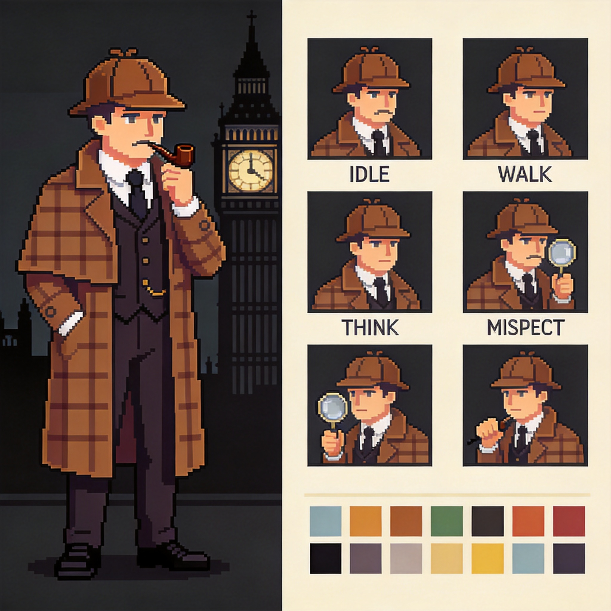

🔍 福尔摩斯像素艺术
Sherlock Holmes Pixel Art - Godot 4.x 游戏引擎资源
📋 完整精灵表

✓ Godot Compatible
🎬 动画帧预览
Idle (待机)


5 帧 | 循环 | 5 FPS
Walk (行走)


5 帧 | 循环 | 8 FPS
Think (思考)


5 帧 | 循环 | 4 FPS
Inspect (检查)


5 帧 | 单次 | 6 FPS
Point (指向)


5 帧 | 单次 | 6 FPS
🎨 调色板 (16 Colors)
📊 资源信息
角色名称：Sherlock Holmes
资源类型：像素艺术 (Pixel Art)
帧尺寸：64x64 像素
格式：PNG (支持透明)
引擎兼容：Godot 4.x
动画数量：5 种 (Idle/Walk/Think/Inspect/Point)
📁 文件结构
godot_project/
├── assets/characters/holmes/pixel_art/
│ ├── sherlock_spritesheet.png
│ ├── animations/
│ │ ├── idle/ (5 帧)
│ │ ├── walk/ (5 帧)
│ │ ├── think/ (5 帧)
│ │ ├── inspect/ (5 帧)
│ │ └── point/ (5 帧)
│ └── README.md
├── scenes/characters/
│ └── holmes_pixel.tscn
└── scripts/characters/
── holmes_pixel.gd